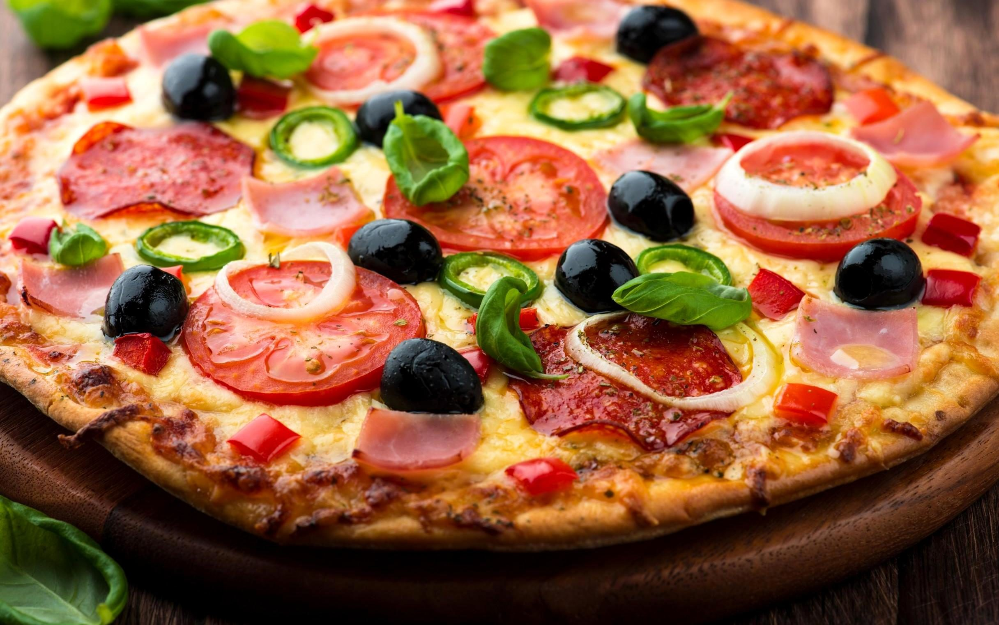

Pizza is a classic dish made with a baked dough crust topped with tomato sauce, cheese, and a variety of toppings. The dough is stretched into a round shape, covered with sauce and mozzarella cheese, then baked until the crust is golden and the cheese is melted and bubbly. Simple toppings such as pepperoni, mushrooms, or vegetables can be added for extra flavor.
Popular around the world, pizza is easy to customize and works well for family meals, parties, or casual dinners. Its combination of a crispy crust, savory sauce, and melted cheese makes it a favorite comfort food.